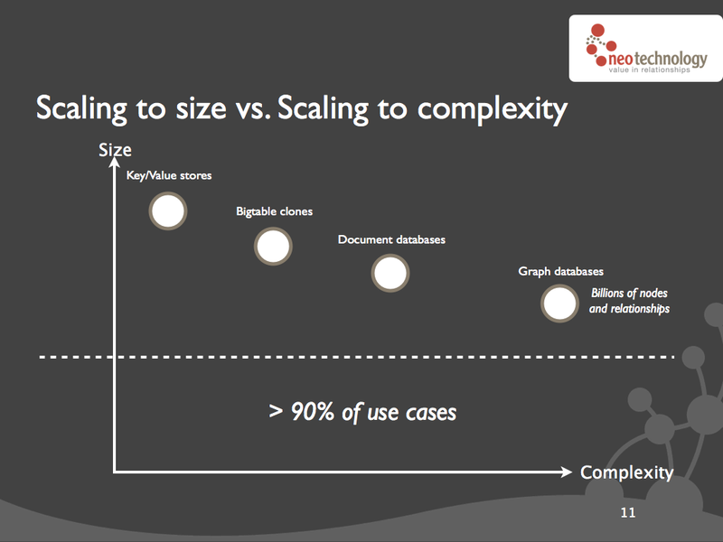
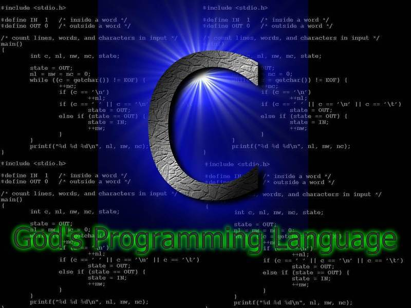
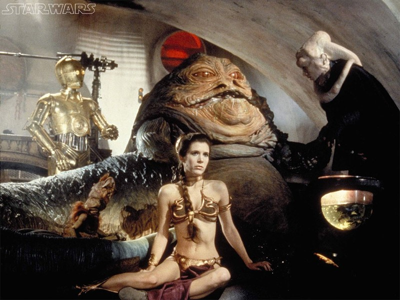
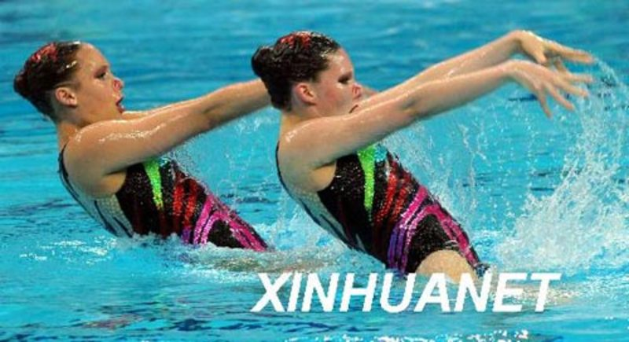
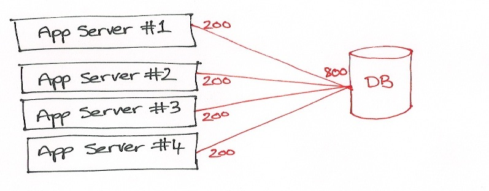
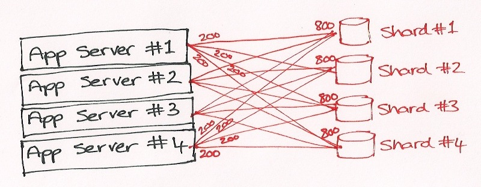

<!DOCTYPE html>

<meta charset="utf-8">
<title>Redis in 5 minutes!</title>

<!-- Your Slides -->
<!-- One section is one slide -->

<section>
		
</section>

<section>
<ul class="big">
		<li><span class="redis_color">RE</span>mote <span class="redis_color">DI</span>ctionnary <span class="redis_color">S</span>erver</li>
		<li><span class="redis_color">REDIS</span>tribute your workload among Redis servers</li>
</ul>
</section>

<section>
	
	<footer><span class="source"><a href="http://notonlysql.com/nosql.png">source</a></span></footer>
</section>

<section>
	
</section>

<section>
<div class="title">
<span class="redis_color">KEY</span> - VALUE
</div>
</section>

<section>
		<ul>
			<li><span class="redis_color">String</span></li>
			<li><span class="redis_color">List</span> => Stack</li>
			<li><span class="redis_color">Set</span> => unordered collections</li>
			<li><span class="redis_color">Sorted Set</span> => ordered collections</li>
			<li><span class="redis_color">Hashes</span> => memory optimized key/value</li>
		</ul>
</section>

<section>
<div class="title">
	Performance
	</div>
</section>

<section>
	
	<footer><span class="source"><a href="http://tech-programs.net/wp-content/uploads/2010/10/C-gods-programming-language1.jpg">source</a></span></footer>
</section>

<section>
	
	<footer><span class="source"><a href="http://4.bp.blogspot.com/_sVGtXNQ2lrg/TQVVqPyErsI/AAAAAAAAABg/JrDbrUqK5W0/s1600/PC3200%2BDDR%2BMemory.jpg">source</a></span></footer>
</section>

<section>
<ul>
    <li>50 simultaneous clients</li>
		<li>100 000 requests</li>
		<li>256 bytes string.</li>
		<li>Linux 2.6, Xeon X3320 2.5Ghz.</li>
		<li><span class="redis_color">110 000 SETs / sec</span></li>
		<li><span class="redis_color">81 000 GETs / sec</span></li>
		</ul>
</section>

<section>
<h2>REPLICATION</h2>
	
	<footer><span class="source"><a href="http://innovativemlmsuccess.com/wp-content/uploads/2010/04/Duplication1.jpg">source</a></span></footer>
</section>

<section>
	
	<footer><span class="source"><a href="http://www.myfreewallpapers.net/starwars/wallpapers/slave-leia.jpg">source</a></span></footer>
	<details>Master Slave replication</details>
</section>

<section>
	
	<footer><span class="source"><a href="http://images.beijing2008.cn/20080421/Img214316757.jpg">source</a></span></footer>
	<details>Data Synchronization. Reading distribution</details>
</section>

<section>
	<div class="title">
		Sharding
	</div>
</section>

<section>
	
	<footer><span class="source"><a href="http://www.dbshards.com/wp-content/uploads/2010/06/ShardDiagram-5.jpeg">source</a></span></footer>
	<details>Without sharding</details>
</section>

<section>
	
<footer><span class="source"><a href="http://www.dbshards.com/wp-content/uploads/2010/06/ShardDiagram-4.jpeg">source</a></span></footer>
	<details>Sharding: writing distribution</details>
</section>

<!-- Your Style -->
<!-- Define the style of you presentation -->


<style>
	@font-face {
  	font-family: 'Irish Grover';
  	font-style: normal;
  	font-weight: normal;
		src: local('Irish Grover'), local('IrishGrover'), url('IrishGrover') format('woff');
	}

  html { background-color: black; }
  body {background-color: white;}
  /* A section is a slide. It's size is 800x600, and this will never change */
  section {
      /* The font from Google */
      font-family: 'Irish Grover', arial, serif;
      font-size: 2.5em;
  }
  h1, h2, h3 {
      margin-top: 50px;
      text-align: center;
  }
  
  ul {
      margin-left: 200px;
  }
  a { color: #FF0066; text-decoration: none; } a:hover {text-decoration: underline;}

	ul {
		list-style-type: none;
		margin: 1em;
	}

	li {
		padding: 0.5em;
	}

	.big {
		font-size: 1.5em;
	}
  
  footer { position: absolute; bottom: 0px; right: 10px; }

	.source {
		font-size: 0.3em;
		color: blue;
	}
	.center_slide{
		margin-top: 25%;
	}

	.top_slide{
		margin-top: 10%;
	}
	
.redis_color{
		color: #d82a20;
	}
	
	.resize{
		width: 100%;
		height: auto;
	}
	
  .title{
		font-size: 3em;
		text-align: center;
		padding-top: 30%;
	}

  /* Transition effect */
  /* Feel free to change the transition effect for original
     animations. See here:
     https://developer.mozilla.org/en/CSS/CSS_transitions
     How to use CSS3 Transitions: */
  section {
      -moz-transition: left 400ms linear 0s;
      -webkit-transition: left 400ms linear 0s;
      -o-transition: left 400ms linear 0s;
      -ms-transition: left 400ms linear 0s;
      transition: left 400ms linear 0s;
  }

  /* Before */
  section { left: -150%; }
  /* Now */
  section[aria-selected] { left: 0; }
  /* After */
  section[aria-selected] ~ section { left: +150% }
</style>


<!-- {{{{ *****************  DZSlides CORE 2.0b1 *************************** -->
<!-- *********************************************************************** -->
<!-- *********************************************************************** -->
<!-- *********************************************************************** -->
<!-- *********************************************************************** -->

<!-- This block of code is not supposed to be edited, but if you want to change the behavior of the slides, feel free to hack it ;) -->

<!-- Default Style -->
<style>
  * { margin: 0; padding: 0; }
  details {display: none;}
  body {
    width: 800px; height: 600px;
    margin-left: -400px; margin-top: -300px;
    position: absolute; top: 50%; left: 50%;
    overflow: hidden;
  }
  section {
    position: absolute;
    pointer-events: none;
    width: 100%; height: 100%;
  }
  section[aria-selected] { pointer-events: auto;}
  body {display: none}
  body.loaded {display: block}
</style>

<script>
  var friendWindows = [];
  var idx = 1;
  var slides;

  /* main() */

  window.onload = function() {
    slides = document.querySelectorAll("body > section");
    onhashchange();
    setSlide();
    document.body.className = "loaded";
    onresize();
  }

  /* Handle keys */

  window.onkeydown = function(e) {
    // Don't intercept keyboard shortcuts
    if (e.altKey || e.ctrlKey || e.metaKey || e.shiftKey) {
      return;
    }
    if ( e.keyCode == 37 // left arrow
      || e.keyCode == 33 // page up
    ) {
      e.preventDefault();
      back();
    }
    if ( e.keyCode == 39 // right arrow
      || e.keyCode == 34 // page down
    ) {
      e.preventDefault();
      forward();
    }

    if ( e.keyCode == 32) { // space
        e.preventDefault();
        toggleContent();
    }
  }

  /* Adapt the size of the slides to the window */

  window.onresize = function() {
    var sx = document.body.clientWidth / window.innerWidth;
    var sy = document.body.clientHeight / window.innerHeight;
    var transform = "scale(" + (1/Math.max(sx, sy)) + ")";
    document.body.style.MozTransform = transform;
    document.body.style.WebkitTransform = transform;
    document.body.style.OTransform = transform;
    document.body.style.msTransform = transform;
    document.body.style.transform = transform;
  }
  function getDetails(idx) {
    var s = document.querySelector("section:nth-of-type("+ idx +")");
    var d = s.querySelector("details");
    return d?d.innerHTML:"";
  }
  window.onmessage = function(e) {
    msg = e.data;
    win = e.source;
    if (msg === "register") {
      friendWindows.push(win);
      win.postMessage(JSON.stringify({method: "registered", title: document.title, count: slides.length}), document.location);
      win.postMessage(JSON.stringify({method: "newslide", details: getDetails(idx), idx: idx}), document.location);
      return;
    }
    if (msg === "back") back();
    if (msg === "forward") forward();
    if (msg === "toggleContent") toggleContent();
    // setSlide(42)
    var r = /setSlide\((\d+)\)/.exec(msg);
    if (r) {
        idx = r[1];
        setSlide();
    }
  }

  /* If a Video is present in this new slide, play it.
     If a Video si present in the previous slide, stop it. */

  function toggleContent() {
    var s = document.querySelector("section[aria-selected]");
    if (s) {
        var video = s.querySelector("video");
        if (video) {
            if (video.ended || video.paused) {
                video.play();
            } else {
                video.pause();
            }
        }
    }
  }

  /* If the user change the slide number in the URL bar, jump
     to this slide. */

  window.onhashchange = function(e) {
    var newidx = ~~window.location.hash.split("#")[1];
    if (!newidx) newidx = 1;
    if (newidx == idx) return;
    idx = newidx;
    setSlide();
  }

  /* Slide controls */

  function back() {
    if (idx == 1) return;
    idx--;
    setSlide();
  }
  function forward() {
    if (idx >= slides.length) return;
    idx++;
    setSlide();
  }
  function setSlide() {
    var old = document.querySelector("section[aria-selected]");
    var next = document.querySelector("section:nth-of-type("+ idx +")");
    if (old) {
      old.removeAttribute("aria-selected");
      var video = old.querySelector("video");
      if (video) { video.pause(); }
    }
    if (next) {
      next.setAttribute("aria-selected", "true");
      var video = next.querySelector("video");
      if (video) { video.play(); }
    } else {
      console.warn("No such slide: " + idx);
      idx = 0;
      for (var i = 0; i < slides.length; i++) {
          if (slides[i].hasAttribute("aria-selected")) {
              idx = i + 1;
          }
      }
    }
    window.location.hash = idx;
    for (var i = 0; i < friendWindows.length; i++) {
        friendWindows[i].postMessage(JSON.stringify({method: "newslide", details: getDetails(idx), idx: idx}), document.location);
    }
  }
</script>
<!-- vim: set fdm=marker: }}} -->
